Releasenotes eBlinqx Hypotheekadvies – Oktober 2025
Onderstaande updates hebben wij in de maand oktober doorgevoerd:
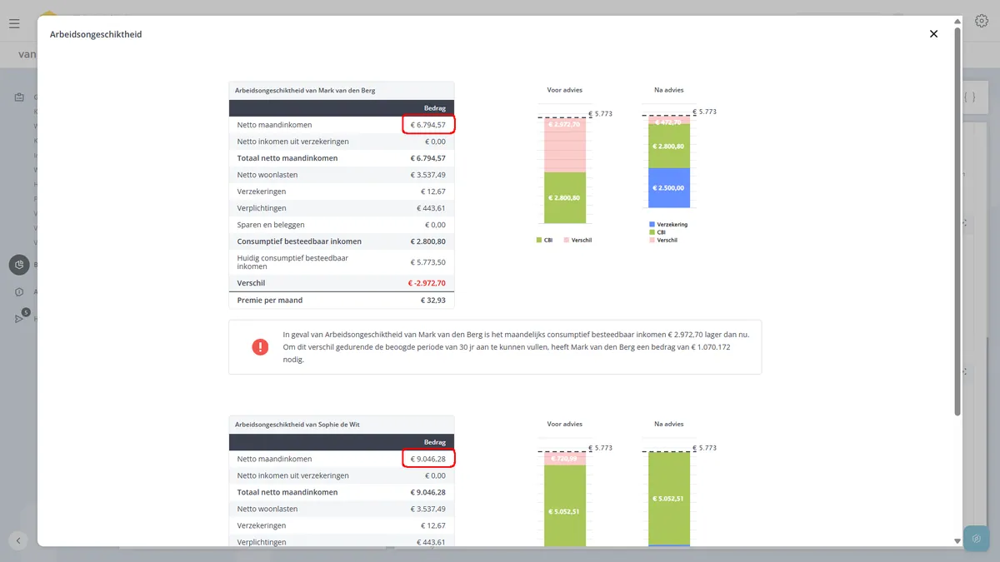
💡 IT-28305: eBlinqx Hypotheekadvies rekent nu met de nieuwste netto-inkomens van 2025 én 2026!
Goed nieuws! eBlinqx Hypotheekadvies is weer helemaal up-to-date met de nieuwste netto-inkomenstabellen voor 2025 en 2026. Zo kun jij rekenen met de juiste bedragen — precies zoals de Belastingdienst het bedoeld heeft. Wat is er nieuw?
-
T/m 31 december 2025 gebruikt eBlinqx Hypotheekadvies automatisch de witte, groene en grijze tabellen 2025.
-
Vanaf 1 januari 2026 schakelt eBlinqx Hypotheekadvies automatisch over naar de tabellen 2026.
✨ Wat betekent dit voor jou?
Of je nu een berekening maakt Q4-2025 of alvast vooruitkijkt naar 2026 — eBlinqx Hypotheekadvies houdt alles netjes bij de tijd. Zo blijf jij altijd rekenen met de meest actuele en betrouwbare inkomensgegevens. eBlinqx Hypotheekadvies groeit mee met de toekomst — elke berekening, elke rekendatum, altijd spot-on. 🚀
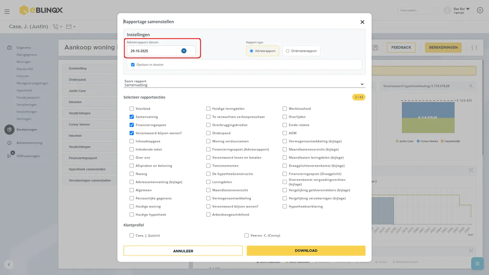
💡 IT-28248: Vernieuwd modal ‘Rapportage samenstellen’
Het scherm waarin je jouw rapportage samenstelt heeft een frisse update gekregen. Niet alleen oogt het rustiger, het voldoet ook aan de laatste compliance-richtlijnen. Zo houd jij overzicht, en blijft alles netjes binnen de lijnen. Wat is er verbeterd?
-
De NAW-regel(s) bovenaan zijn verwijderd voor een schoner en rustiger beeld.
-
De optie ‘Opslaan in dossier’ staat nu links onder ‘Rapport type’ — precies waar je hem verwacht.
-
De regel ‘Adviesrapport datum’ is alleen nog zichtbaar voor gebruikers met de rol Beheerder. Reguliere gebruikers zien deze niet meer, zodat we voldoen aan de compliance-eisen.
-
Een duidelijke titel “Rapportage samenstellen” prijkt nu bovenaan het modal.
-
De indeling is vernieuwd van twee naar drie kolommen voor een overzichtelijke layout met meer ademruimte.
✨ Wat betekent dit voor jou?
Een duidelijker scherm, minder afleiding en een interface die precies doet wat jij nodig hebt — snel, netjes en volgens de regels. eBlinqx Hypotheekadvies blijft elke dag een stukje mooier én gebruiksvriendelijker. 🚀
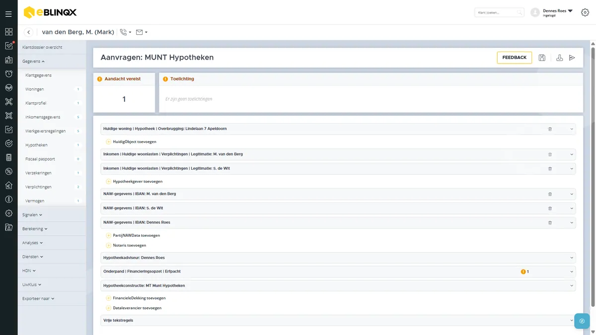
💡 IT-28173: HDN-aanvraagformulier verder geoptimaliseerd!
In het vernieuwde HDN-aanvraagformulier hebben we twee slimme verbeteringen doorgevoerd die het gebruik nóg prettiger maken. Wat is er verbeterd?
-
Rustiger laden: bij het openen van het formulier worden technische processen nu vloeiend samengevoegd tot één laadmoment. De pagina blijft stabiel — geen visuele verspringen meer.
-
Slim opslaan: zodra je het formulier opslaat, sluit het laatst geopende invulvak automatisch. Je komt direct terug in het overzicht met alle secties netjes gesloten.
✨ Wat betekent dit voor jou?
Een scherm dat zich gedraagt zoals jij verwacht: overzichtelijk, stabiel en rustig — zodat jij kunt focussen op het advies in plaats van op het klikken.
eBlinqx Hypotheekadvies blijft verbeteren — ook in de kleinste details die jouw werk nét dat beetje fijner maken.
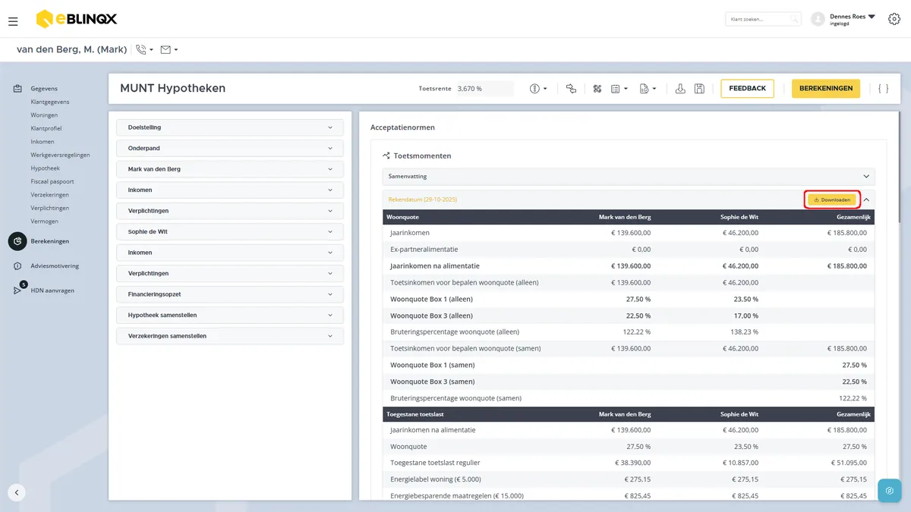
💡 IT-28306: Supersnelle download van de acceptatie- en beheernormen! 🚀
We hebben het pdf-bestand met de acceptatie- en beheernormen flink onder handen genomen. Waar dit document eerder onnodig groot was (tot wel 25 MB!), is het nu geoptimaliseerd voor snelheid en gebruiksgemak. Wat is er verbeterd?
-
De bestandsgrootte van het pdf-document is drastisch verkleind.
-
Downloaden gaat nu razendsnel, ook bij trage verbindingen.
-
De inhoud en opmaak zijn uiteraard volledig behouden.
✨ Wat betekent dit voor jou?
Geen lange wachttijden meer — het document opent en downloadt soepel, precies zoals je verwacht van eBlinqx Hypotheekadvies. Sneller, lichter en efficiënter: weer een kleine, maar fijne stap vooruit! ⚡
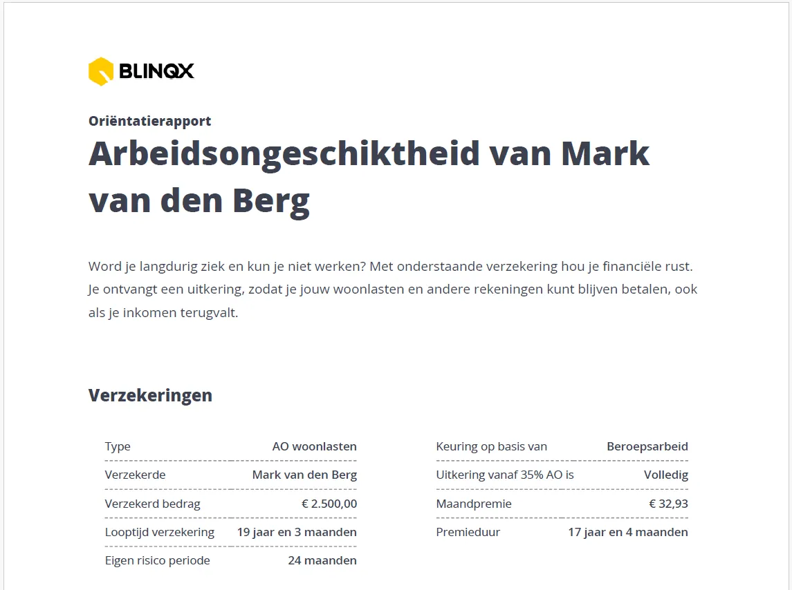
💡 IT-28232: Commercieel Oriëntatierapport — zonder ingangsdatums!
We het Commercieel Oriëntatierapport verder geoptimaliseerd. De ingangsdatums van overlijdensrisicoverzekeringen (ORV) en woonlastenbeschermers (WLB) zijn verwijderd om het rapport overzichtelijker te maken voor de klant. Wat is er verbeterd?
-
De ingangsdatums van ORV’s en WLB’s worden niet langer getoond in het rapport.
-
Dit voorkomt onnodige verwarring bij indicatieve premies in de oriëntatiefase.
-
Het rapport oogt rustiger, eenvoudiger en is beter afgestemd op de adviespraktijk.
✨ Wat betekent dit voor jou?
Een rapport dat zich volledig richt op wat er écht toe doet in de oriëntatiefase — helder, klantvriendelijk en professioneel. eBlinqx Hypotheekadvies blijft scherp op de details die jouw advies nóg sterker maken. 🚀
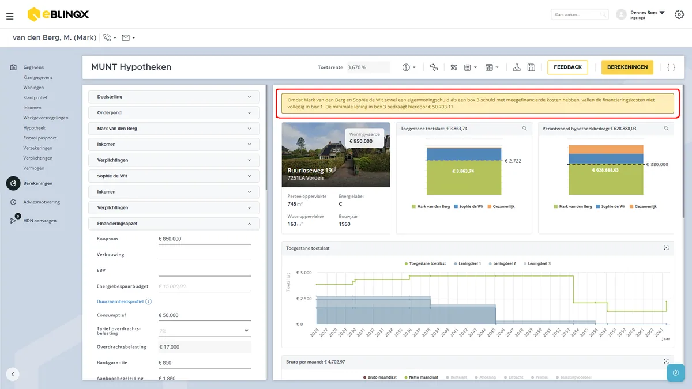
💡 IT-27812: Correcte melding bij volledige Box 3-hypotheek
eBlinqx Hypotheekadvies geeft voortaan de juiste melding wanneer een hypotheek volledig in Box 3 valt. De eerdere melding over een combinatie van eigenwoningschuld en Box 3-schuld verscheen onterecht, wat kon leiden tot verwarring of een verkeerde interpretatie van de financieringslast. Wat is er verbeterd?
-
De melding over een mix van Box 1 en Box 3 wordt niet meer getoond als de volledige hypotheek in Box 3 valt.
-
De berekening van de financieringslast blijft nu volledig correct en transparant.
-
Minder ruis, meer duidelijkheid — precies zoals het hoort.
✨ Wat betekent dit voor jou?
Je ziet voortaan alleen meldingen die echt relevant zijn voor de situatie van jouw klant. Zo blijft je advies helder, professioneel en foutloos onderbouwd. eBlinqx Hypotheekadvies — elk detail telt, elke berekening klopt.
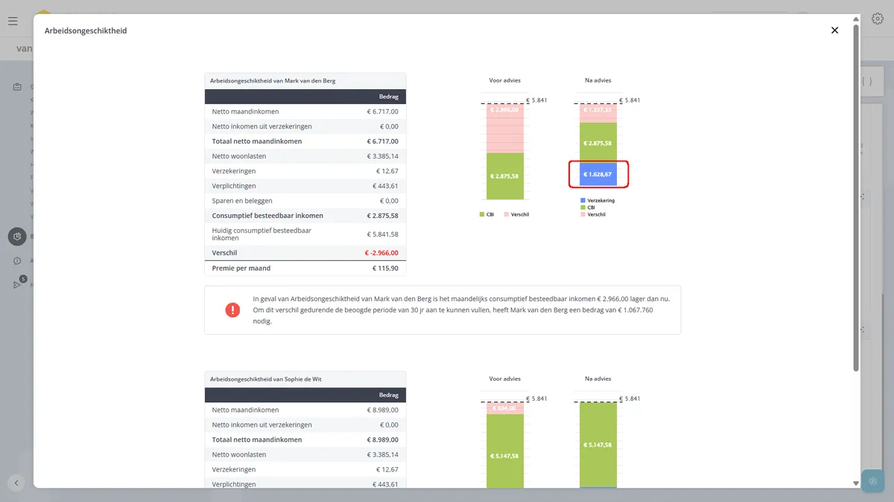
💡 IT-28276: Nauwkeurigere weergave van resterend inkomen bij arbeidsongeschiktheid
De grafiek Arbeidsongeschiktheid in het verdiepende scherm is verbeterd en laat nu een nóg realistischer en betrouwbaarder beeld zien van het inkomen van jouw klant. Tot nu toe kon het resterend inkomen na advies in sommige situaties iets te hoog lijken, omdat de uitkering uit de Inkomensbeschermer als extra werd meegenomen in plaats van als aanvulling tot 70% van het laatstverdiende salaris. Dat is nu perfect rechtgezet. eBlinqx Hypotheekadvies rekent en toont voortaan het consumptief besteedbaar inkomen — helder, kloppend en volledig in lijn met de werkelijkheid.
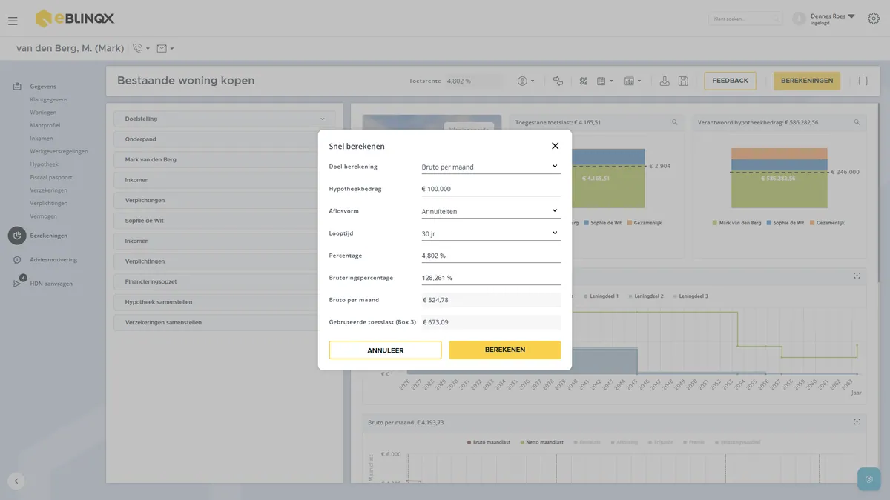
💡 IT-27831: Box 3-veld toegevoegd aan ‘Snel berekenen’
De Snel berekenen-tooling is slimmer geworden! Vanaf nu sluit deze handige rekentool volledig aan op de gegevens uit het bijbehorende dossier. Dat betekent: minder handmatig werk, meer consistentie en nóg snellere berekeningen. ⚡
Wat is er nieuw?
✅ De toetsrente wordt automatisch geprefilled met de gewogen gemiddelde rente uit de achterliggende berekening — uiteraard nog steeds aanpasbaar door jou als adviseur.
✅ De bruteringsfactor wordt voortaan automatisch opgehaald.
✅ Nieuwe berekende velden:
-
Bij Bruto per maand verschijnt nu ook de Gebruteerde toetslast (Box 3).
-
Bij Hypotheekbedrag zie je voortaan zowel Hypotheekbedrag (Box 1) als het nieuwe Hypotheekbedrag (Box 3).
Wat betekent dit voor jou?
Je kunt nu in één oogopslag zowel de Box 1- als Box 3-scenario’s vergelijken, zonder aparte berekeningen te hoeven maken. Dat maakt jouw advies sneller, accurater en transparanter richting de klant.
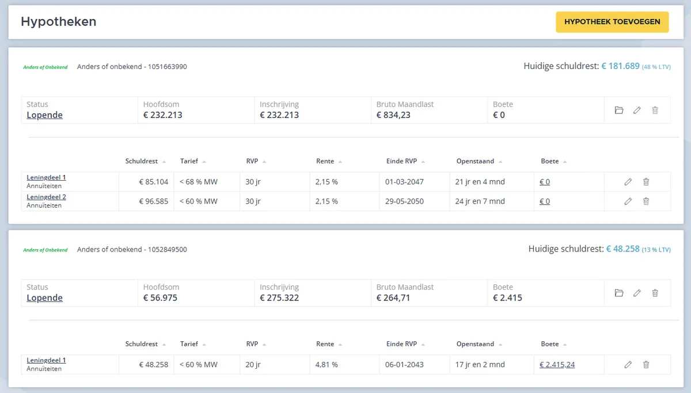
💡 IT-28198: Potentiële overwaarde nu berekend over álle hypotheken
eBlinqx Hypotheekadvies houdt vanaf nu bij de berekening van de potentiële overwaarde rekening met alle lopende hypotheken op hetzelfde onderpand. Voorheen werd slechts één hypotheek meegenomen, waardoor de berekende overwaarde soms iets te rooskleurig werd weergegeven. Dat is nu volledig opgelost. De berekening sluit voortaan naadloos aan op de 90%-regeling én geeft een realistisch en betrouwbaar beeld van de beschikbare overwaarde van de klant.
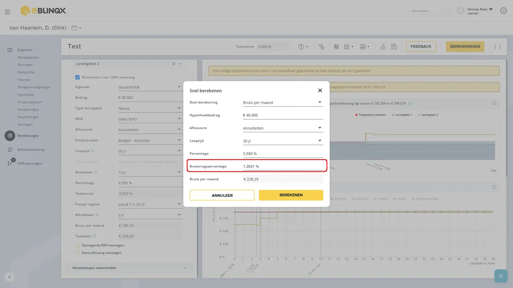
💡 IT-28256: Bruteringspercentage in te vullen bij 'Snelberekenen'
In de rekentool 'Snel berekenen' kun je voortaan ook het bruteringspercentage invoeren waarna het gebruteerde bedrag getoond. Zo heb je direct inzicht in de berekening achter de toetslast en de gebruteerde toetslast indien de resterend rentevastperiode korter is dan 10 jaar.
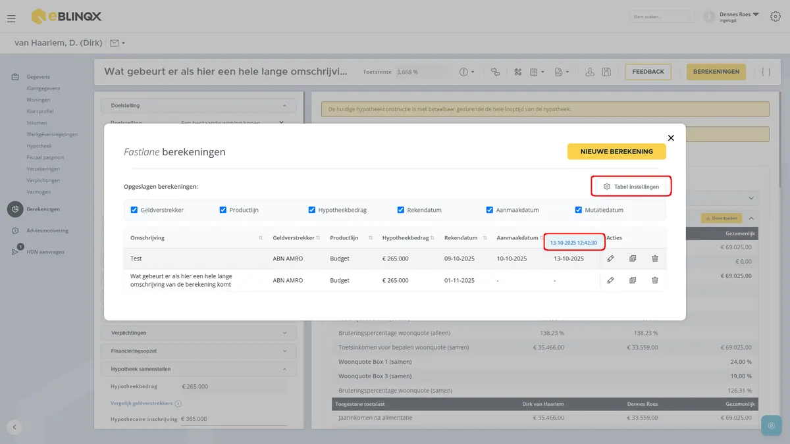
💡 IT-28254: Verbeterde weergave in het berekeningsoverzicht
Het berekeningsoverzicht heeft een flinke upgrade gekregen voor nog meer gebruiksgemak!
🔹 Volledige namen en datums zichtbaar — Waar eerder teksten werden afgekort, zie je nu via een handige hover-tooltip direct de volledige naam of datum.
🔹 Nieuwe filterfunctie — Bepaal zelf welke berekeningen of kolommen je wilt zien en stel het overzicht af op jouw eigen voorkeuren.
🔹 Aangepaste regelhoogte — Langere omschrijvingen worden nu automatisch over twee regels verdeeld, zodat alles netjes leesbaar blijft.
🔹 Tijdstip bij aanmaak- en mutatiedatum — Beweeg met je muis over de datum en je ziet meteen het exacte tijdstip waarop de berekening is aangemaakt of gewijzigd.
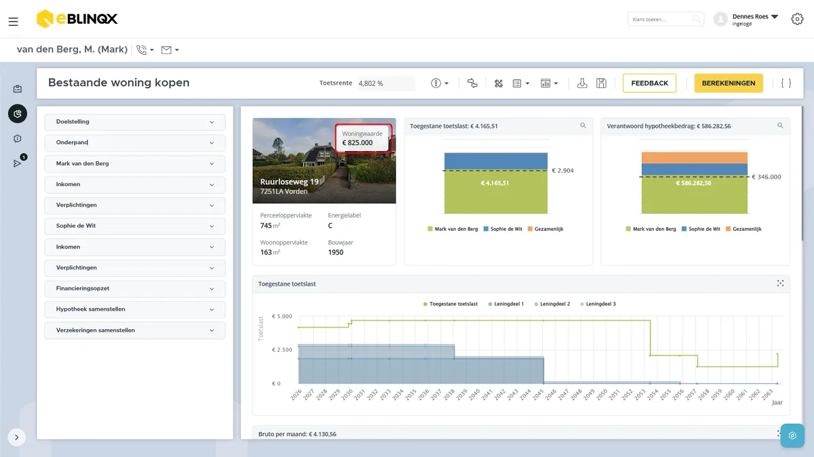
💡 IT-27924: Correcte prefill van marktwaarde bij ‘Huidige situatie evalueren'
De marktwaarde wordt vanaf nu automatisch juist geprefilled bij de doelstelling Huidige situatie evalueren. eBlinqx Hypotheekadvies gebruikt hierbij de taxatiewaarde in plaats van de RWWR-waarde, zodat de berekening direct goed start en foutmeldingen achterwege blijven. Een kleine aanpassing met groot gebruiksgemak!
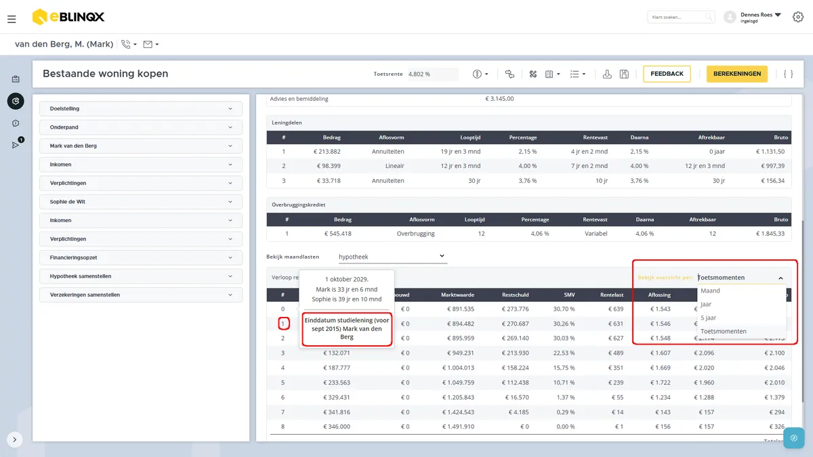
💡 IT-28151: Nieuwe filteroptie ‘Toetsmomenten’ in overzicht Restschuld en Maandlasten
In het overzicht Verloop restschuld en maandlasten kun je nu nóg gerichter filteren. Naast de bestaande weergaves per maand, jaar en 5 jaar is er een nieuwe optie toegevoegd: TOETSMOMENTEN.
Kies je voor deze filter, dan toont eBlinqx Hypotheekadvies uitsluitend de datums die overeenkomen met de toetsmomenten uit de acceptatienormen. De weergave is bovendien overzichtelijker dankzij een nieuw dropdown-menu met standaardinstelling 5 jaar.
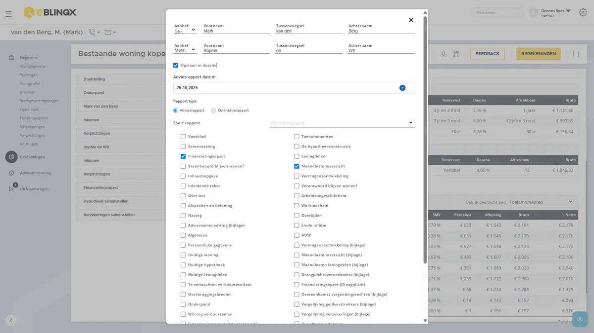
💡 IT-28027: Foutloos genereren van Adviesrapport met Financieringsopzet en Maandlastenoverzicht
Het genereren van een Adviesrapport met de onderdelen Financieringsopzet en Maandlastenoverzicht verloopt vanaf nu weer soepel. De eerdere foutmelding (“Calculation error”) is opgelost, zodat je zonder onderbreking complete rapporten kunt downloaden — ook bij aankopen in 2026.
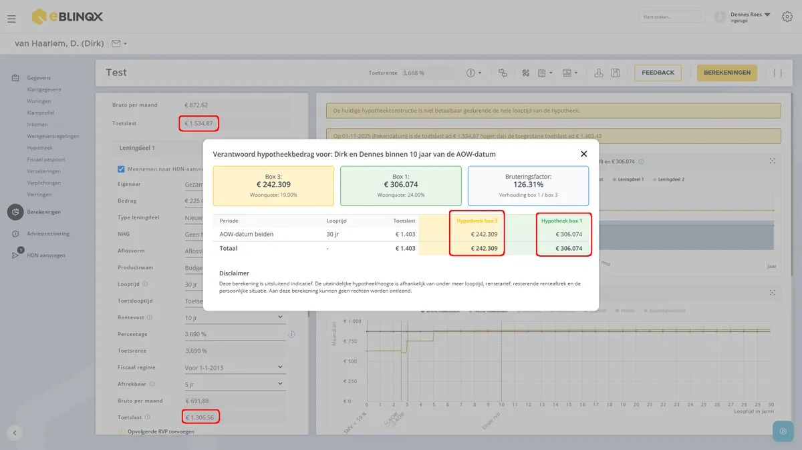
💡 IT-28115: Verbeterde berekening bij “10 jaar voor AOW”
Vanaf nu berekent eBlinqx Hypotheekadvies de inkomenssituatie rondom de AOW-leeftijd nóg nauwkeuriger. De bruteringslogica is gecorrigeerd, zodat er alleen wordt gebruteerd wanneer dit daadwerkelijk van toepassing is — én met het juiste percentage. Zo kloppen je berekeningen altijd, ook bij complexe situaties met meerdere aanvragers en verschillende AOW-momenten.
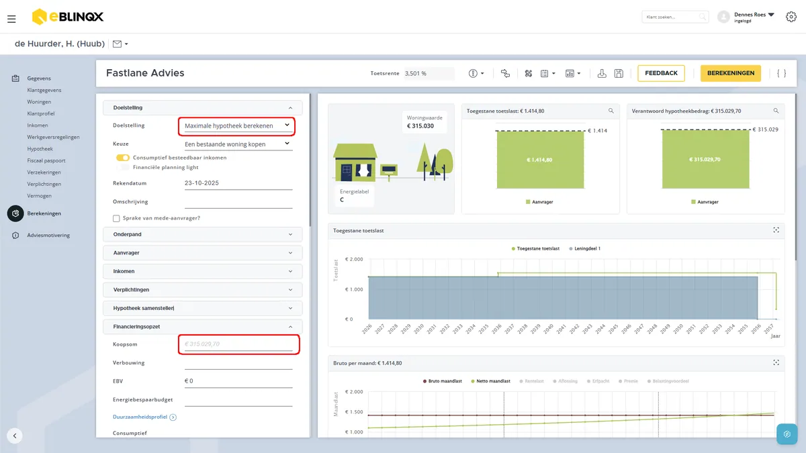
💡 IT-28016 – Automatische herberekening bij aanpassing toetsrente
Vanaf nu wordt de maximale hypotheek in Fastlane Advies automatisch opnieuw berekend zodra je de (toets)rente aanpast.
Waar dit eerder alleen in Fastlane Oriëntatie gebeurde, is het gedrag nu volledig gelijkgetrokken. Pas je de rente aan, dan zie je direct het vernieuwde hypotheekbedrag en de aangepaste grafieken — snel, helder en consistent in alle onderdelen van eBlinqx Hypotheekadvies.
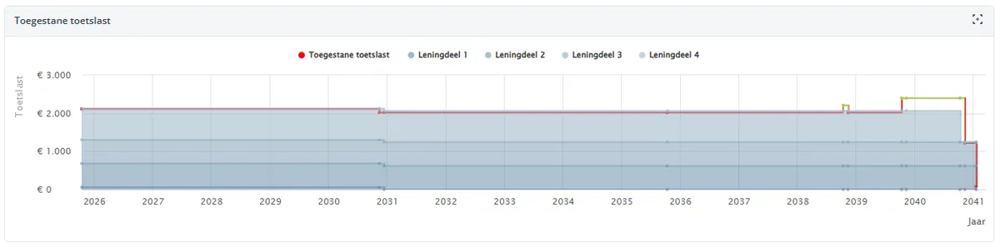
💡 IT-27787 – Toegestane toetslast weer volledig correct
In sommige berekeningen verscheen tussen 2031 en 2035 een onverwachte stijging in de grafiek van de toegestane toetslast. Dit is onderzocht én opgelost.
De berekening sluit nu weer naadloos aan op de onderliggende logica, waardoor de grafiek een volledig kloppend verloop toont. Adviseurs kunnen hun berekening weer met vertrouwen afronden en gebruiken in het adviestraject.
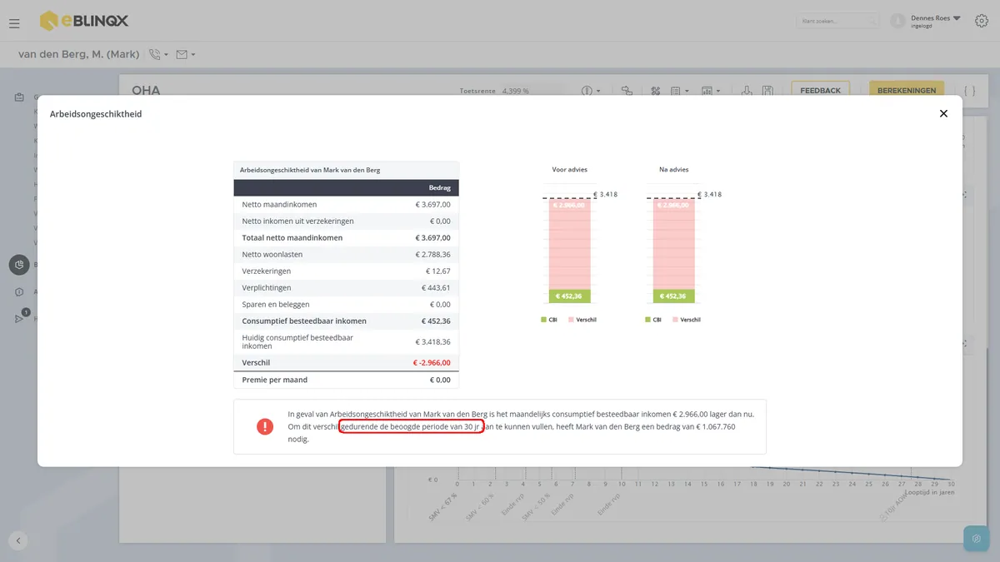
💡 IT-27787 – Grafiek toegestane toetslast hersteld
Tussen 2031 en 2035 werd in sommige gevallen een onverklaarbare stijging in de grafiek van de toegestane toetslast getoond. Dit is nu volledig opgelost.
De berekening en grafiek lopen weer perfect synchroon, zodat je de resultaten zorgeloos kunt gebruiken in het adviestraject.
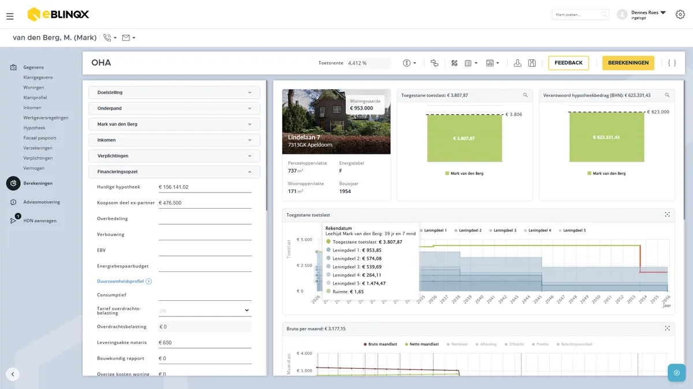
💡 IT-28165 – Nieuwe visuele weergave ruimte en tekort in lijndiagram
De grafiek ‘Toegestane toetslast’ is vernieuwd! Vanaf nu toont de lijndiagram voor elke situatie duidelijk de ruimte of het tekort op ieder toetsmoment — niet alleen binnen tien jaar voor AOW.
Het resultaat: één uniforme, heldere en krachtige visualisatie die in één oogopslag inzicht geeft in de financiële ruimte gedurende de looptijd. Dat maakt jouw klantgesprek nog duidelijker én overtuigender.
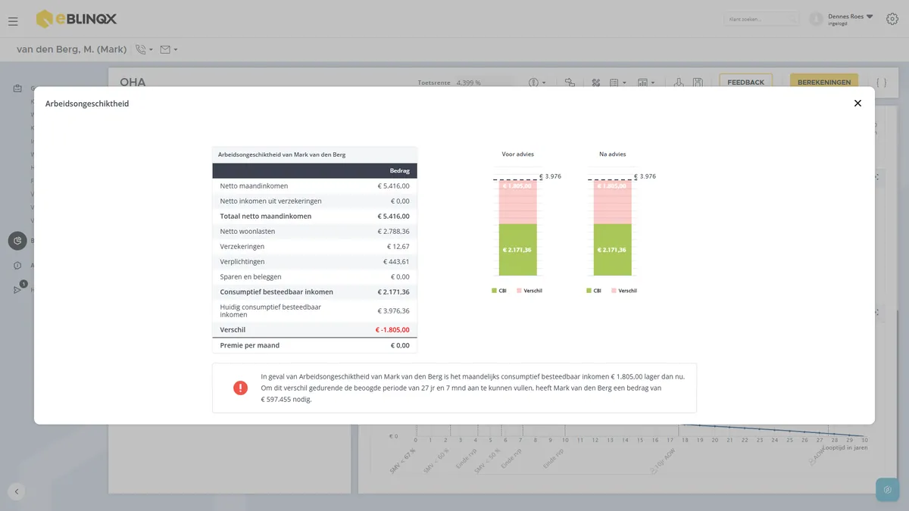
💡 IT-27640 – AOV-uitkering nu volledig juist in CBI-advies
Vanaf nu wordt een bestaande AOV-uitkering die is gemarkeerd als “meegenomen naar advies” volledig correct verwerkt in het CBI-advies.
De uitkering telt automatisch mee in het resterend inkomen, en verschijnt nu ook overzichtelijk in het jaar- en maandoverzicht onder ‘Inkomen uit verzekeringen’. Zowel de bruto- als netto-weergave in het adviesrapport zijn daarmee helemaal up-to-date.
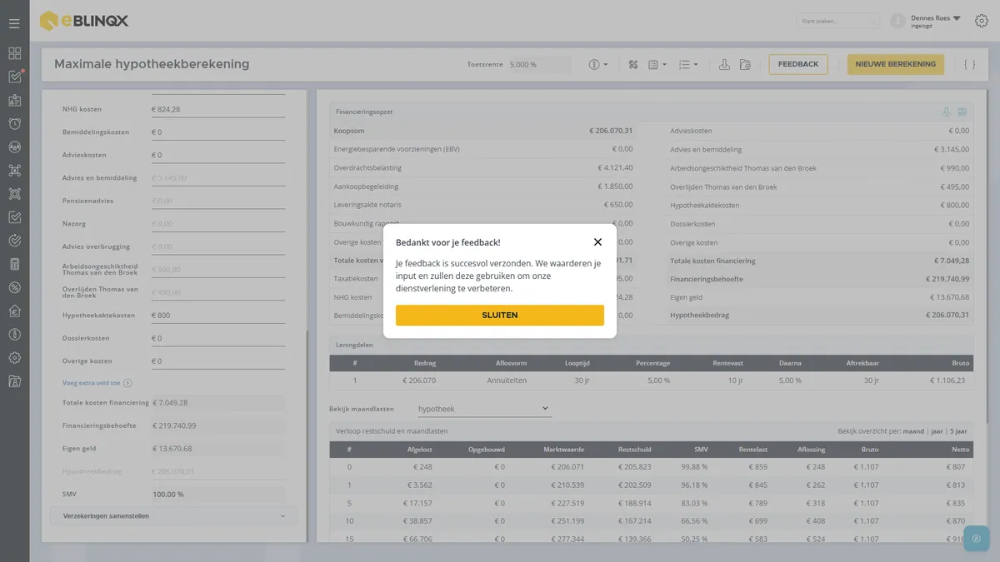
💡 IT-28214 – Slimme blokkade voorkomt dubbele feedback
Vanaf nu kun je niet meer per ongeluk meerdere identieke meldingen indienen door te vaak op “Feedback” te klikken.
De knop wordt tijdelijk gedeactiveerd terwijl de melding wordt verwerkt en toont een duidelijke visuele terugkoppeling (laden, spinner of melding “Je melding wordt verwerkt…”). Zo ontstaat een vlotte, foutloze en gebruiksvriendelijke ervaring — getest en goedgekeurd in Chrome, Edge én Firefox.
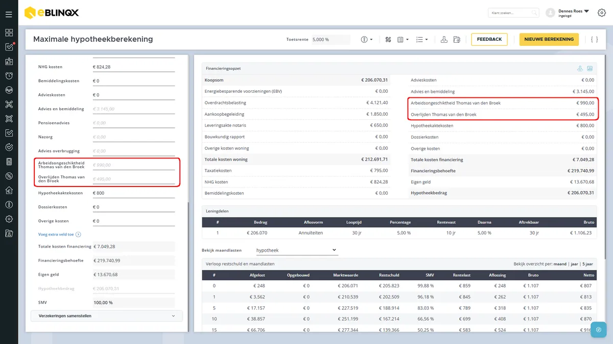
💡 IT-28195 – Financieringsopzet voor alleenstaanden verder verbeterd
De financieringsopzet is nu nog slimmer voor alleenstaande klanten. Alleen de relevante kostenposten worden getoond, waardoor het overzicht duidelijker en accurater is dan ooit.
De totaaltellingen sluiten perfect aan op de werkelijke situatie, terwijl bij dossiers met een mede-aanvrager alles vanzelfsprekend volledig zichtbaar blijft. Resultaat: een professioneler en overzichtelijker advies voor elke alleenstaande klant.
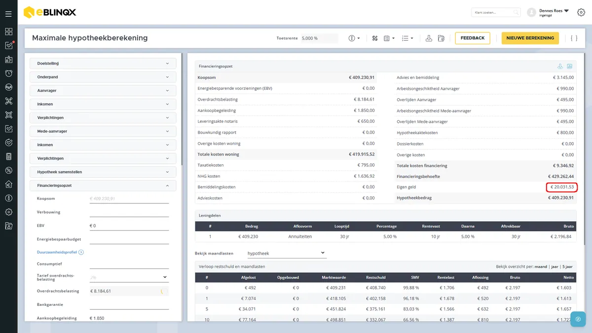
💡 IT-27922 – Eigen geld voortaan in één duidelijk veld
De financieringsopzet binnen ‘Maximale hypotheek berekenen’ is vereenvoudigd! De velden ‘Eigen geld aanvrager’ en ‘Eigen geld mede-aanvrager’ zijn samengevoegd tot één overzichtelijk veld: ‘Eigen geld’.
Dat betekent meer duidelijkheid, minder invulwerk en een praktischer weergave voor zowel adviseur als klant.
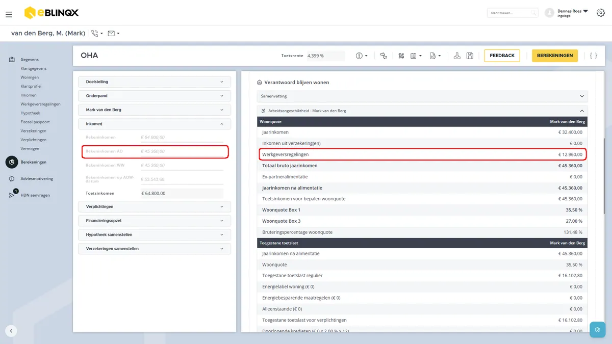
💡 IT-27983 – WGA-Hiaatuitkering nu zichtbaar in AO-grafieken
De WGA-Hiaatuitkering wordt vanaf nu ook duidelijk weergegeven in de verdiepende AO-grafieken.
Waar deze uitkering eerder alleen in de berekening, sidebar en het adviesrapport zichtbaar was, sluit de grafiek nu volledig aan op het advies. Zo ontstaat een eenduidige, transparante en visueel complete weergave van het resterend inkomen bij arbeidsongeschiktheid.
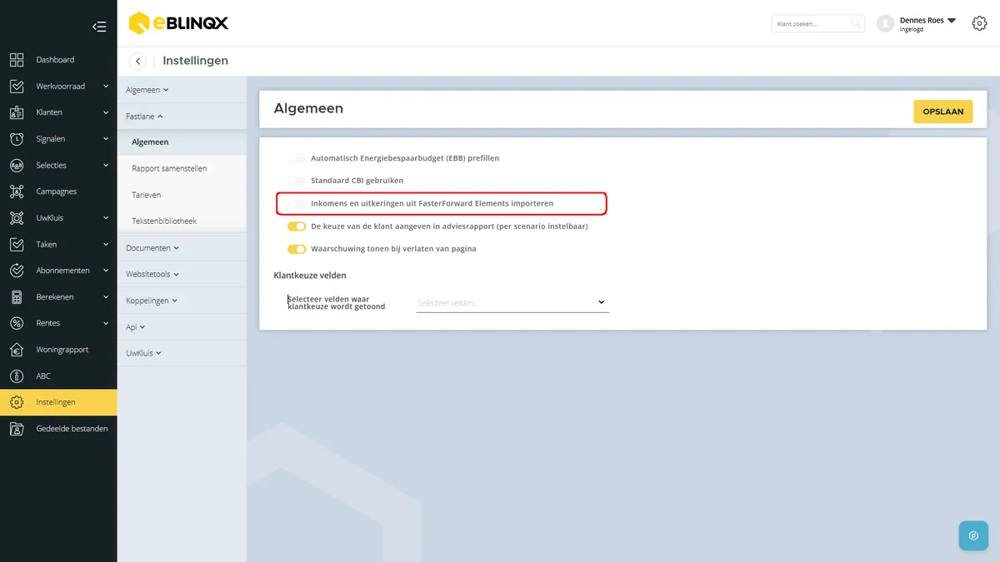
💡 IT-27101 – Nieuwe optie voor inkomensimport uit Elements
Vanaf nu kun je zelf bepalen of inkomens en uitkeringen uit Elements automatisch worden geïmporteerd via de SOAP-koppeling.
De instelling staat standaard uit, maar zodra je deze activeert, worden de gegevens automatisch doorgelaten en opgeslagen in eBlinqx Hypotheekadvies. Zo houd je volledige controle over welke data uit Elements wordt ingelezen — automatisch of liever handmatig.
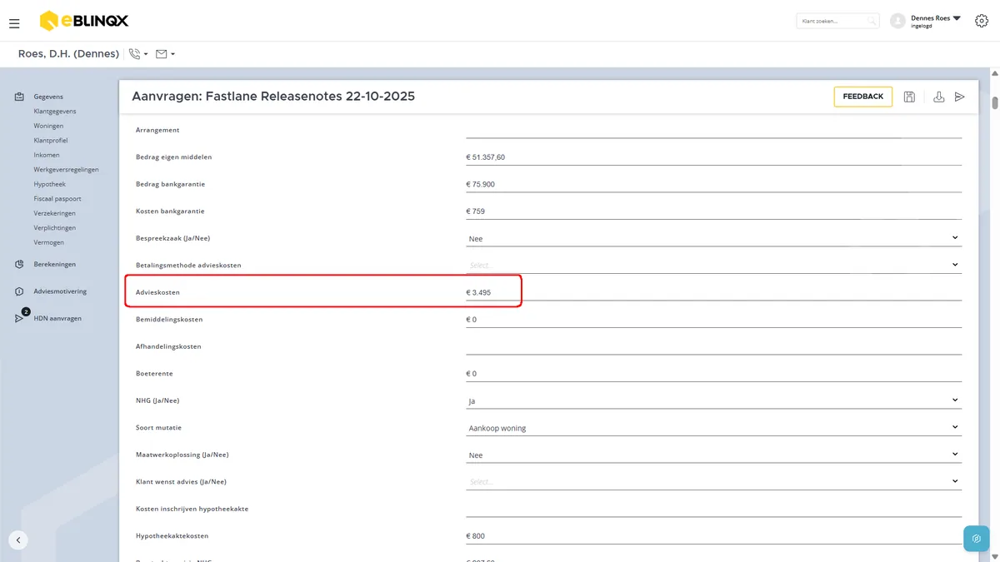
💡 IT-28225 – Advieskosten nu automatisch correct in HDN-aanvraag
Het bedrag dat je invult bij ‘Advies en bemiddeling’ wordt vanaf nu automatisch gemapped naar het veld ‘Advieskosten’ in het HDN-aanvraagformulier. 🎯
Daardoor worden de juiste kosten altijd meegestuurd en is elke HDN-aanvraag voortaan volledig en foutloos richting de geldverstrekker.
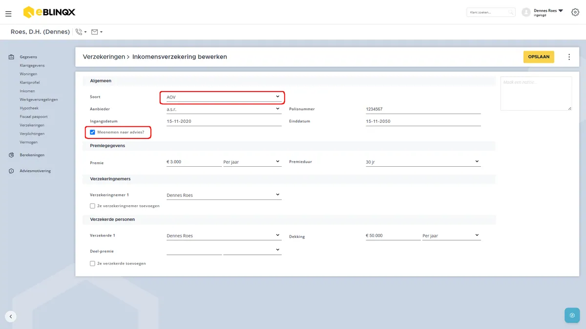
💡 IT-27639 – Bestaande AOV automatisch verwerkt in resterend inkomen
Een bestaande AOV die je hebt gemarkeerd als “meenemen naar advies” wordt nu automatisch meegenomen in het resterend inkomen.
De uitkering verschijnt als ‘Inkomen uit verzekeringen’ in de presentatie én in het adviesrapport. Het totaal bruto jaarinkomen wordt direct bijgewerkt, waardoor je advies volledig, transparant en foutloos wordt onderbouwd.
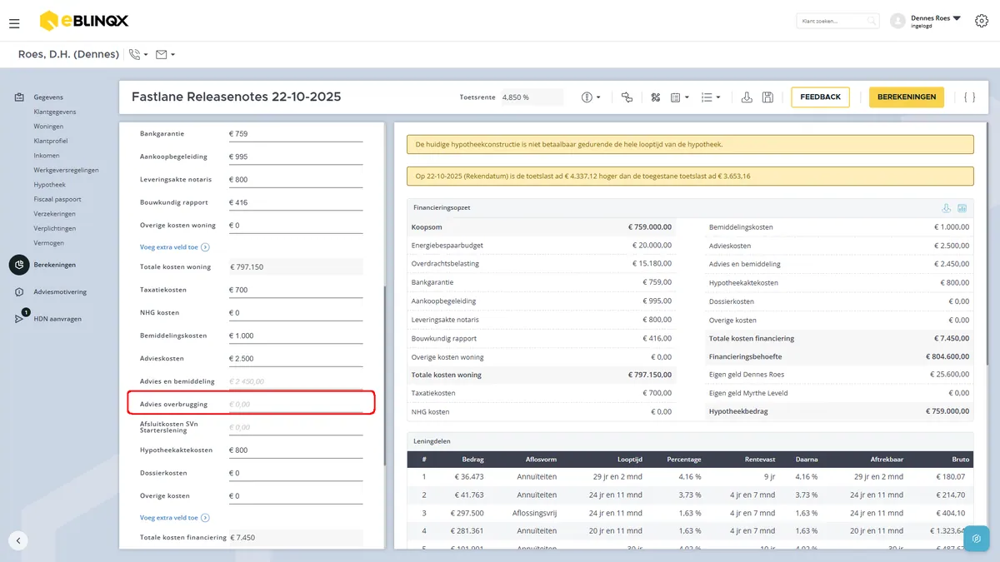
💡 IT-27736 – Slimmere prefill van tarief voor overbruggingshypotheek
eBlinqx Hypotheekadvies vult het tarief voor een overbruggingshypotheek nu alleen nog in wanneer dit écht relevant is.
Bij starters of klanten zonder verkoop van een huidige woning blijft het veld automatisch leeg of € 0,00, zodat je niets meer handmatig hoeft te corrigeren. Het resultaat: altijd kloppende, transparante dossiers en een nóg soepelere workflow.
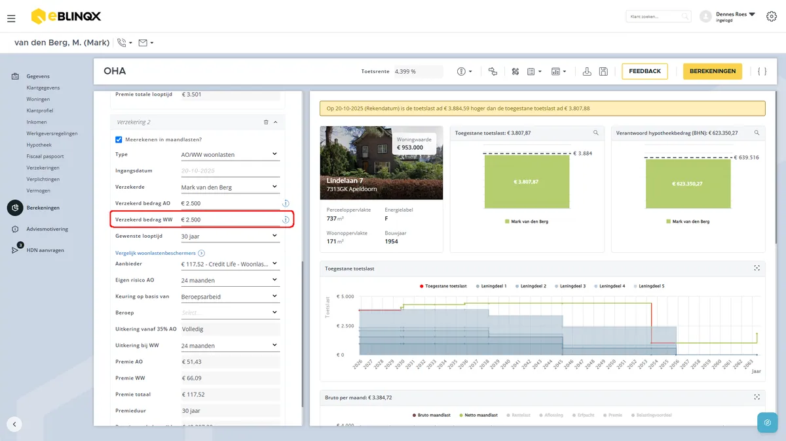
🎯 IT-28207: AO/WW-dekking onafhankelijk van type rapport
Vanaf nu wordt de WW-dekking binnen de woonlastenverzekering weer getoond, ongeacht of de module ‘Commercieel Oriëntatierapport’ is ingeschakeld. De eerdere instelling — waarbij de WW-dekking niet zichtbaar was als het Commercieel Oriëntatierapport actief was — is verwijderd.
Je kunt voortaan in alle adviesvarianten een AO-verzekering met of zonder WW-dekking opnemen, zonder afhankelijk te zijn van extra instellingen of modules. Dat maakt het werken met verzekeringen consistenter binnen eBlinqx Hypotheekadvies.
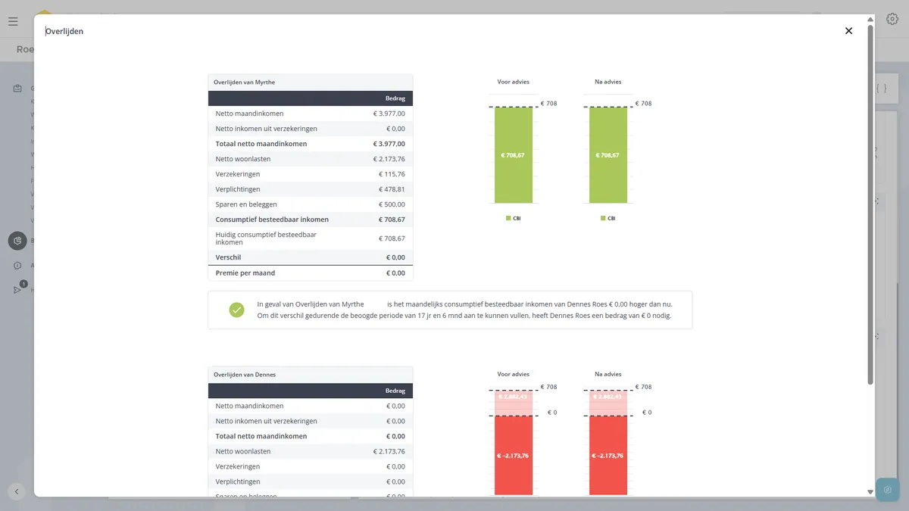
🎯 IT-28216: CBI-modal zichtbaar bij thema ‘Overlijden’
De CBI-modal binnen het thema Overlijden is verbeterd en wordt weergegeven voor klanten met een partner. Bij alleenstaande klanten wordt de modal niet langer getoond, omdat dit in die situatie niet van toepassing is. Je ziet voortaan altijd de juiste CBI-modal, afgestemd op de gezinssituatie van je klant — helder, logisch en volledig in lijn met de CBI-methodiek.
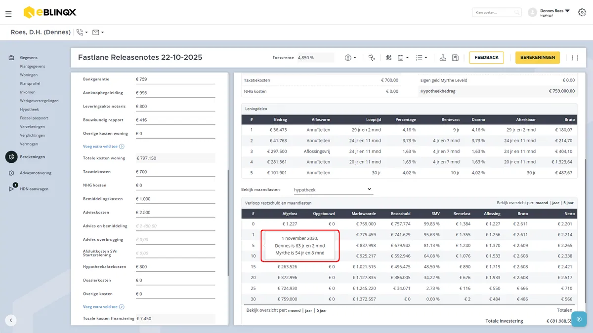
💡 IT-28149: Compactere weergave ‘Verloop restschuld en maandlasten’
Het overzicht ‘Verloop restschuld en maandlasten’ is vernieuwd en oogt nu veel rustiger en overzichtelijker dankzij een compacte kolomweergave met een handige hover-functie.
De eerste vier kolommen (zoals Jaar, Leeftijd aanvrager en Leeftijd mede-aanvrager) zijn samengevoegd tot één compacte kolom. Wanneer je met de muis over deze kolom beweegt, verschijnt een zwarte popup (tooltip) met alle relevante informatie.
Een overzicht dat minder druk oogt, maar meer informatie biedt wanneer je dat wilt. Zo werk je sneller en overzichtelijker, zonder details te missen.
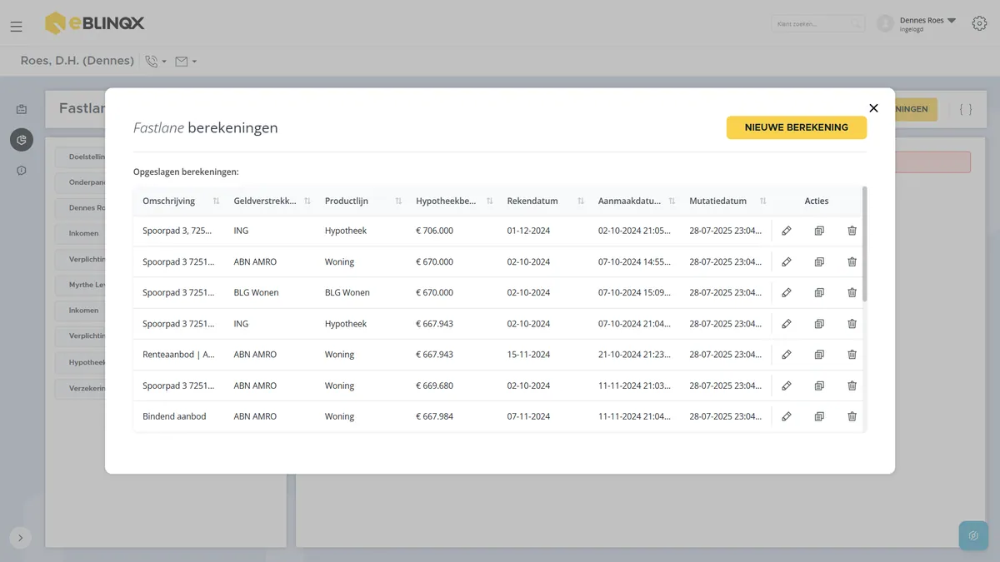
💡 IT-28197: Rustiger weergave overzicht gemaakte berekeningen
Het overzicht van gemaakte berekeningen oogt vanaf nu een stuk strakker en rustiger — de overbodige horizontale scrollbalk onderaan de pagina is verwijderd. De layout en kolombreedtes blijven volledig behouden, zodat je overzicht vertrouwd blijft. Met deze aanpassing ziet het overzicht er netter uit, werk je prettiger en blijft de focus op wat écht belangrijk is: jouw berekeningen.
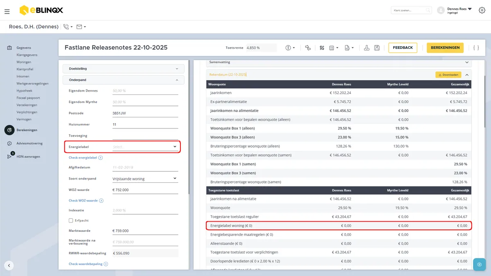
💡 IT-28000: Energielabel nu verplicht
Vanaf nu is het energielabel een verplicht veld bij het berekenen van de maximale leencapaciteit. Hiermee voorkomt eBlinqx Hypotheekadvies dat er onterecht een verhoging wordt toegepast wanneer er geen energielabel is ingevuld.
eBlinqx Hypotheekadvies controleert voortaan of er daadwerkelijk een energielabel is opgevoerd. Alleen als er een energielabel aanwezig is, wordt de eventuele verhoging van de leencapaciteit toegepast.
Zo weet jij zeker dat je altijd met de juiste uitgangspunten rekent.
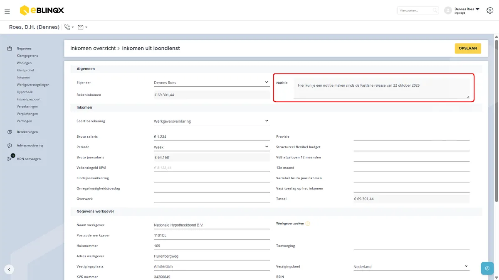
💡 IT-27825: Notitieveld toegevoegd bij Inkomen
Vanaf nu kun je bij het onderdeel Inkomen een notitieveld gebruiken om belangrijke opmerkingen of toelichtingen vast te leggen — vergelijkbaar met het notitieveld dat je al kent van verzekeringen in het inventarisatiegedeelte.
Voeg eenvoudig een persoonlijke toelichting toe bij het inkomen van de aanvrager of partner. Gebruik het veld om bijvoorbeeld specifieke afspraken, verklaringen of bijzonderheden rondom het inkomen vast te leggen. De notitie wordt meegenomen in het dossier, zodat jij en je collega’s altijd context en onderbouwing bij de inkomensgegevens hebben.
Zo heb je voortaan nog meer ruimte om jouw advies en afwegingen volledig en transparant vast te leggen binnen eBlinqx Hypotheekadvies.
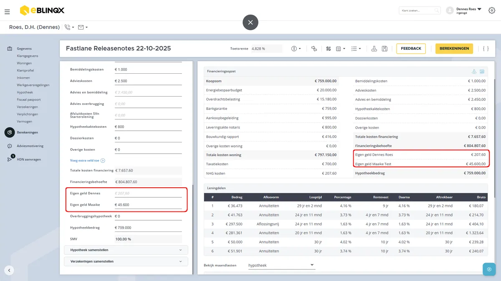
💡 IT-28199: Verdelen eigen geld bij toevoegen leningdeel
Vanaf nu onthoudt eBlinqx Hypotheekadvies de handmatig ingevoerde verdeling van eigen geld tussen aanvrager en partner, ook nadat je een leningdeel (met NHG toevoegt) of de berekening later opnieuw opent. Wat was er aan de hand? Tot nu toe werd bij het toevoegen van een leningdeel met NHG het volledige eigen geldbedrag automatisch teruggezet naar de aanvrager, zelfs als jij dit handmatig bij de partner had ingevuld. Bij het heropenen van de berekening sprong het bedrag vaak opnieuw terug, waardoor je alles telkens opnieuw moest corrigeren. De handmatige verdeling van eigen geld tussen aanvrager en partner blijft nu altijd behouden. eBlinqx Hypotheekadvies onthoudt voortaan precies wat jij hebt ingevoerd.
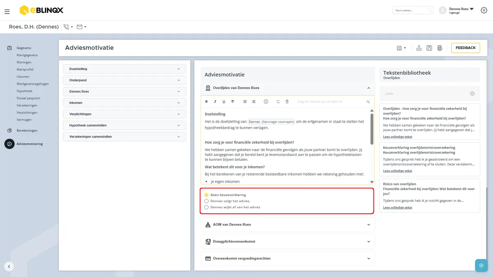
🧾 IT-28171: Keuzeverklaring bij thema ‘Overlijden' voor alleenstaande klanten
Vanaf nu werkt de keuzeverklaring binnen het thema Overlijden ook volledig voor alleenstaande klanten. Zo kun jij voortaan ook in deze situaties jouw advies en de gemaakte keuzes helder vastleggen in zowel de interface als het adviesrapport.
De keuzeverklaring is nu actief en zichtbaar voor alleenstaande klanten. Zodra je kiest voor Geen keuze, Klant volgt advies of Klant maakt andere keuze, verschijnt de bijbehorende mededeling direct op het scherm. Geef je bij “Klant maakt andere keuze” een toelichting, dan wordt deze nu automatisch opgenomen in het adviesrapport.
Met deze uitbreiding kun je ook bij alleenstaande klanten een volledige en transparante adviesverantwoording opnemen binnen het thema Overlijden.
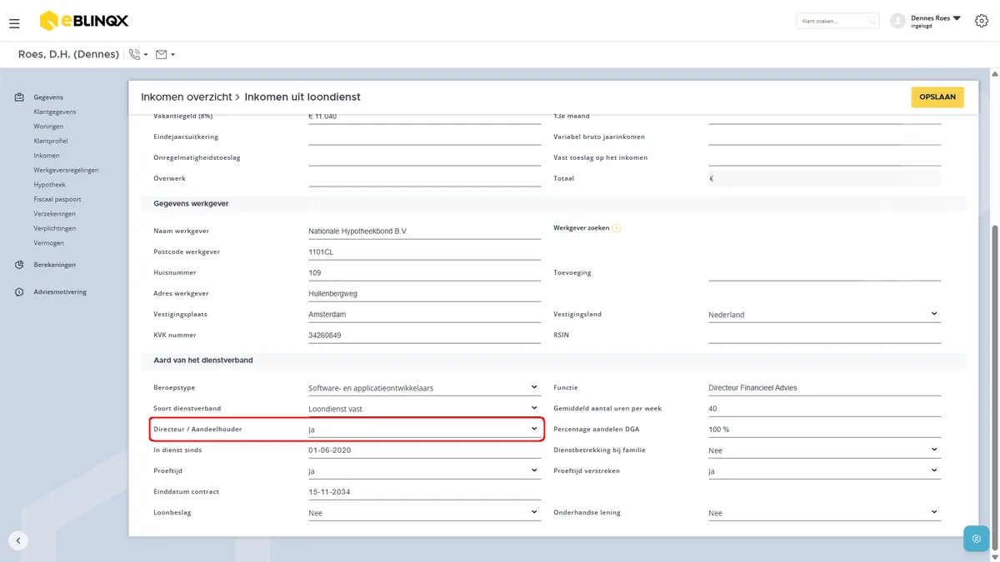
🆕 IT-27982: WW-scenario voor Directeur-Grootaandeelhouders (DGA)
Wanneer je in eBlinqx Hypotheekadvies bij het inventariseren van het inkomen aangeeft dat de klant Directeur / Aandeelhouder is, houdt eBlinqx Hypotheekadvies hier vanaf nu automatisch rekening mee in het life-event Werkloosheid (WW).
Bij een Directeur / Aandeelhouder = Ja, wordt de klant beschouwd als ondernemer. Ondernemers hebben bij werkloosheid geen recht op een WW-uitkering. Daarom wordt het resterende inkomen bij WW in deze situatie nu automatisch op € 0,00 gezet.
Zo sluit de berekening beter aan bij de praktijk, en hoef jij dit niet langer handmatig aan te passen.
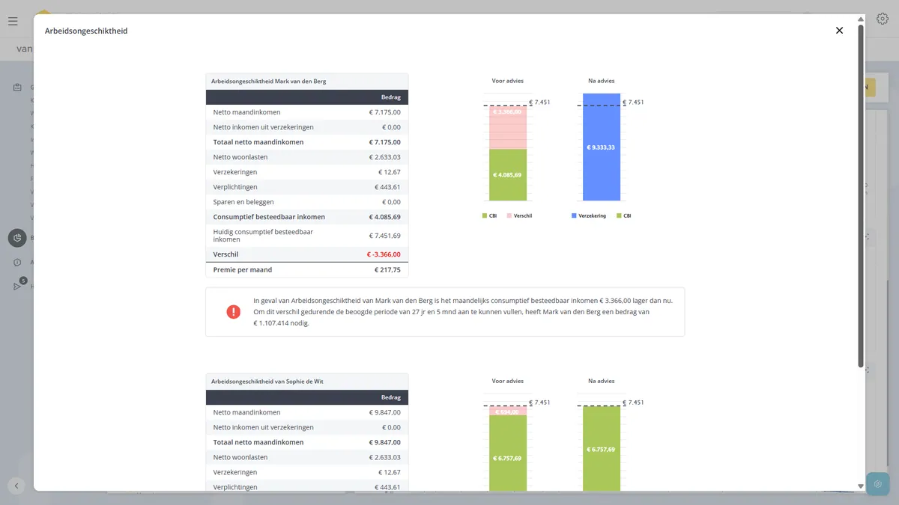
💡 IT-28038 – Verzekerd inkomen omgerekend naar maandbedrag
Binnen het thema Arbeidsongeschiktheid (CBI-methodiek) werd het verzekerde inkomen in de staafdiagram per abuis als jaarbedrag getoond. Het weergegeven bedrag in de staafdiagram wordt nu automatisch omgerekend van jaar naar maand. De visuele weergave in de staafdiagram sluit nu volledig aan op de bedragen die je in het verdiepende scherm ziet. Dit zorgt voor een realistischer en duidelijker beeld van het maandinkomen bij arbeidsongeschiktheid.
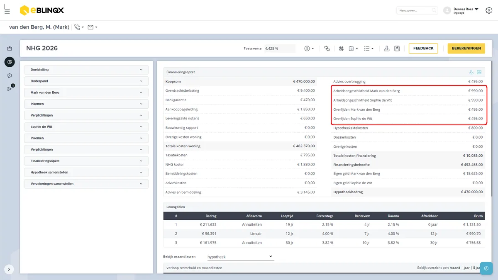
💡 IT-28051 – Aanpassingen in de financieringsopzet voor AO & ORV
Vanaf nu kun je als adviseur zelf bepalen of de velden Arbeidsongeschiktheid (AO) en Overlijden (ORV) zichtbaar zijn in de financieringsopzet. Je behoudt de regie over welke posten je in de financieringsopzet en het rapport wilt tonen. Zo blijft de presentatie van je financieringsopzet overzichtelijk en afgestemd op de stuatie van jouw klant.
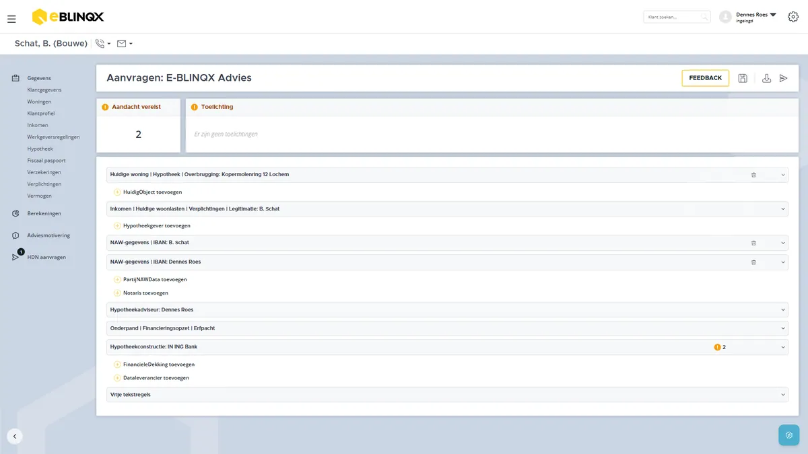
💡 IT-28095 – Verbeterde styling en gebruikservaring HDN-aanvraagformulier
Het HDN-aanvraagformulier in eBlinqx Hypotheekadvies heeft een flinke gebruiksvriendelijke upgrade gekregen. De vormgeving en interactie zijn verbeterd zodat jij als adviseur sneller, overzichtelijker en met minder frustratie door het formulier kunt werken.
✅ Wat is er verbeterd?
-
Notificaties verplaatst: de meldingen zijn verhuisd van de rechterkant van het scherm naar de bovenkant van de pagina, zodat je direct ziet wat er nog moet worden aangevuld.
-
Nieuwe kleurstelling: notificaties zijn voortaan oranje in plaats van rood. Rood wekte de indruk van fouten, terwijl het hier alleen om nog in te vullen velden gaat.
-
Visuele ondersteuning: elke notificatie bevat nu ook een icoon, waardoor de status sneller herkenbaar is.
-
Slimme hoofdstukken: zodra je een nieuw hoofdstuk opent, sluit het vorige automatisch. Dat voorkomt een extreem lange (scroll) pagina.
-
Alle nog in te vullen velden direct zichtbaar: zowel de generieke als maatschappijspecifieke velden worden nu in één keer getoond, zodat je niet meer hoeft te wachten tot na de eerste validatie.
-
Volledige breedte weergave: het formulier vult nu het volledige scherm, waardoor je meer overzicht hebt.
-
Vaste meldingsbalk: de balk met meldingen en nog in te vullen velden blijft bovenaan de pagina staan, zodat je altijd direct feedback ziet tijdens het invullen.
💬 Wat betekent dit voor jou?
Een rustiger, overzichtelijker en efficiënter HDN-formulier waarin je minder hoeft te klikken en te zoeken. Zo kun jij je volledig richten op de inhoud van je advies, niet op de vorm.
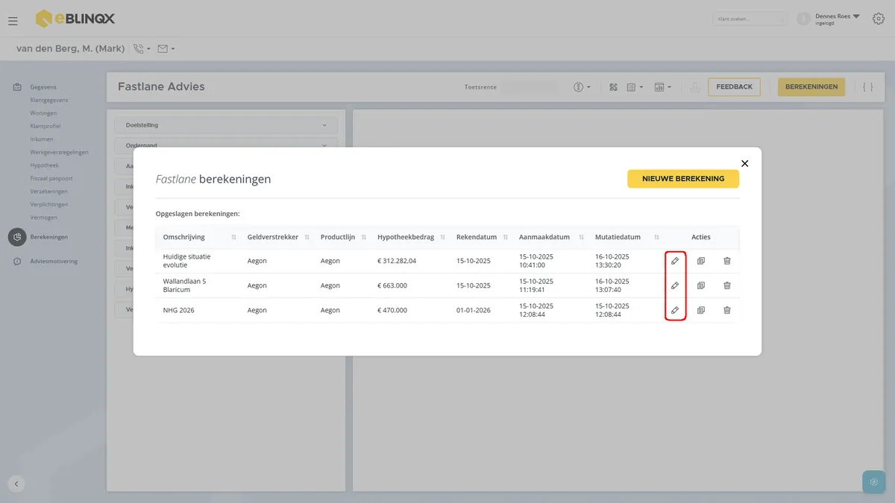
💡 IT-28004 – Berekeningsnaam aanpassen
Vanaf nu kun je in eBlinqx Hypotheekadvies Berekeningen snel en eenvoudig de naam van een berekening wijzigen — zonder eerst het hele dossier te hoeven openen. Bij de actie-iconen naast je berekeningen vind je voortaan een potlood-icoon. Zodra je hierop klikt, kun je direct de naam van de berekening aanpassen. Alleen de naam is bewerkbaar; alle overige velden blijven ongewijzigd. Kortom: een kleine verbetering die het werken met je berekeningen weer net wat prettiger en efficiënter maakt. ✨
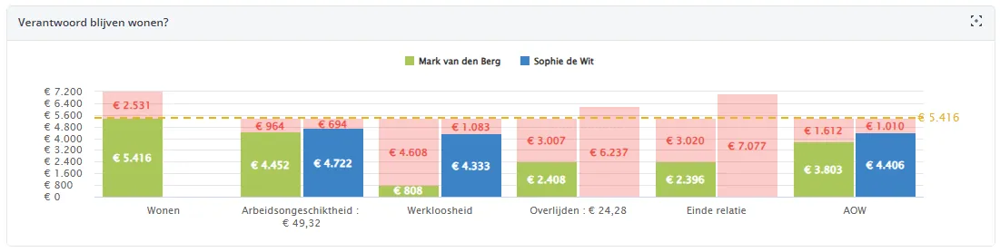
💡 IT-26968 – Premies na wisselen tussen adviesmethodieken
Wanneer je tijdens het advies schakelde tussen de methodieken GHF en CBI, verdwenen soms de premies van de verzekeringen (zoals ORV, woonlastenbeschermers en inkomensaanvullers) uit de berekening. Hierdoor werden deze bedragen niet meer getoond in de financieringsopzet en de bruto/netto maandlastenweergave, wat leidde tot een onvolledig beeld van de totale maandlasten.
✅ Wat is er nu opgelost?
De premies van alle geselecteerde verzekeringen worden nu altijd correct opnieuw berekend en weergegeven, ongeacht of je werkt volgens de GHF- of CBI-methodiek.
💬 Wat merk jij hiervan?
Bij het wisselen van adviesmethodiek blijft je overzicht voortaan volledig en transparant. De maandlasten worden inclusief de verzekeringspremies getoond, zodat je advies én de output richting de klant weer volledig kloppen.
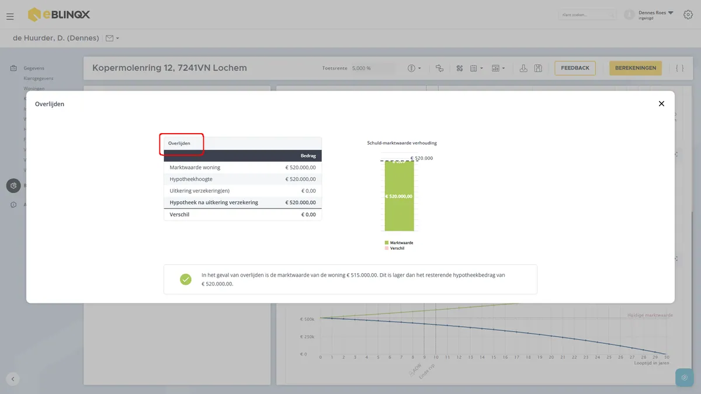
💡 IT-28005 – Tekstweergave bij alleenstaande klant in verdiepende schermen ‘Overlijden’ (CBI)
Wanneer je in eBlinqx Hypotheekadvies via de CBI-methodiek een advies opstelde voor een alleenstaande klant, werd in het verdiepende scherm bij het thema Overlijden ten onrechte de tekst weergegeven: “Overlijden van mede-aanvrager”. Dit was verwarrend, omdat er in het dossier maar één persoon aanwezig is. eBlinqx Hypotheekadvies herkent voortaan automatisch wanneer er sprake is van een alleenstaande klant en past de teksten daarop aan: De titel in het verdiepende scherm luidt nu gewoon “Overlijden”.
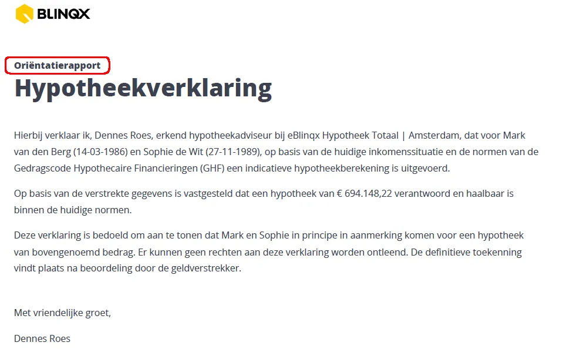
💡 IT-27988: Aanpassing subtitel bij de Hypotheekverklaring
De subtitel van de ‘Hypotheekverklaring’ is aangepast van ‘Adviesrapport’ naar ‘Oriëntatierapport’. Een hypotheekverklaring wordt in de praktijk vaak al tijdens de oriëntatiefase afgegeven — dus voordat het adviestraject formeel start. De nieuwe subtitel sluit beter aan bij deze gebruiksfase en voorkomt verwarring over de status van het document.
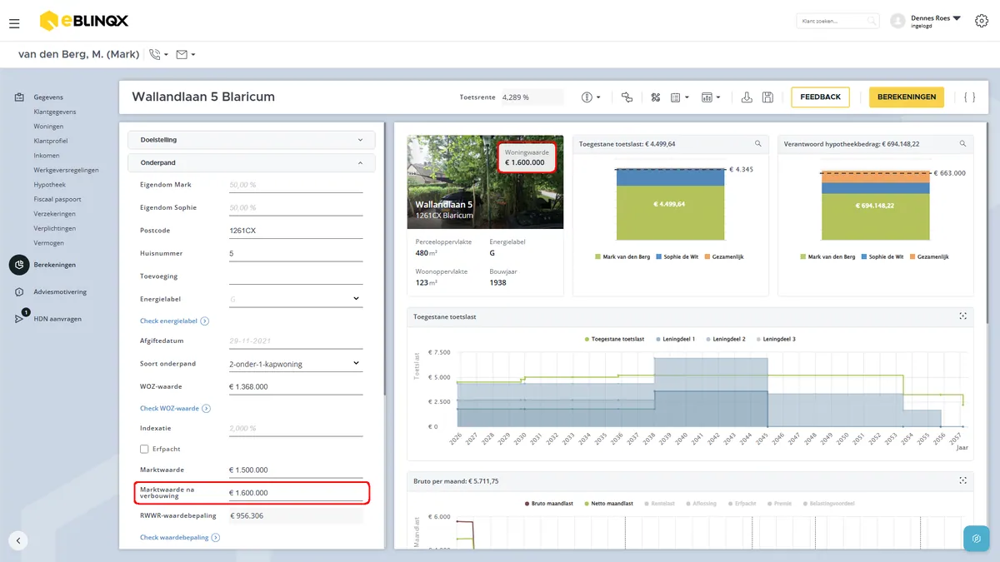
💡 IT-26750 – Marktwaarde na verbouwing zichtbaar bij foto van het onderpand
Tot nu toe werd bij de foto van het onderpand altijd de marktwaarde vóór verbouwing getoond. Dat zorgde regelmatig voor verwarring, zeker bij dossiers waarin sprake is van een verbouwingsfinanciering. De getoonde waarde gaf dan niet het juiste beeld van de toekomstige situatie na de verbouwing. eBlinqx Hypotheekadvies toont vanaf nu bij de foto van het onderpand automatisch de marktwaarde na verbouwing, zodra deze in het dossier is ingevuld.
-
Is er wél een marktwaarde na verbouwing? → Dan tonen we die waarde.
-
Is er geen marktwaarde na verbouwing beschikbaar? → Dan tonen we de reguliere marktwaarde.
-
De labeltekst of tooltip maakt bovendien duidelijk welke waarde wordt weergegeven (“Marktwaarde na verbouwing” of “Marktwaarde”).
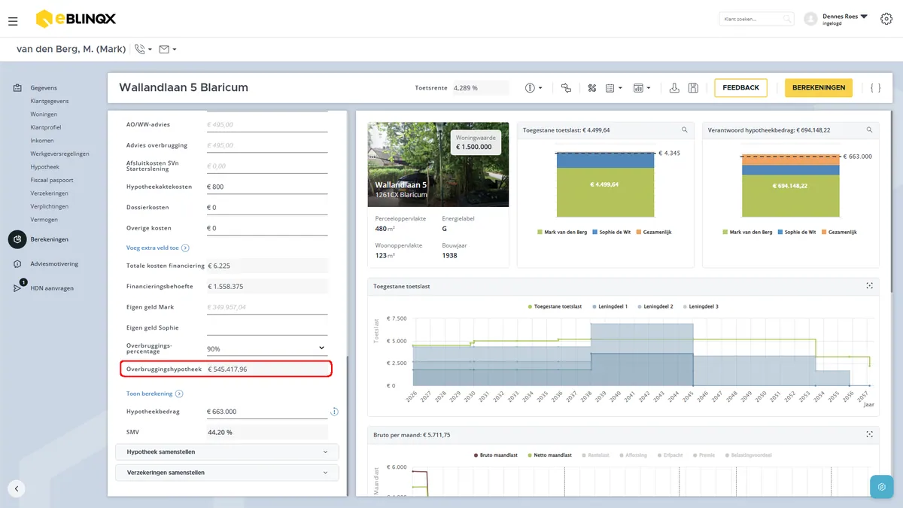
💡 IT-28160 – Berekening bleef hangen bij overbruggingshypotheek met datum in het verleden
Wanneer je werkte met een overbruggingshypotheek en de rekendatum in het verleden lag (bijvoorbeeld 1 januari 2024), kon het gebeuren dat eBlinqx Hypotheekadvies de berekening niet uitvoerde. De pagina leek te blijven hangen zonder foutmelding of uitleg. Dit bleek te komen door een onzichtbare validatie in de achtergrond die direct een fout triggerde, nog voordat alle gegevens correct waren ingeladen. Daardoor kon de berekening niet worden gestart.
We hebben de interne validatielogica (loanFieldValidation) aangepast zodat eBlinqx Hypotheekadvies eerst wacht tot alle gegevens volledig zijn geladen voordat de validatie wordt uitgevoerd. Hierdoor worden de waarden van de overbruggingshypotheek correct ingelezen en loopt de berekening soepel door.
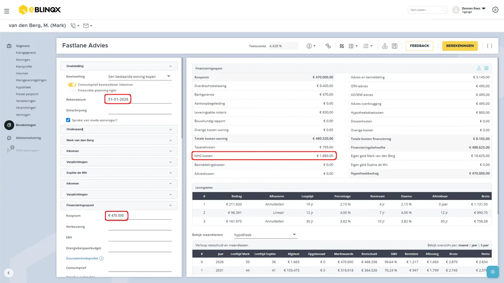
IT-28136 – NHG-grens en borgtochtprovisie 2026 geactualiseerd
Vanaf rekendatum 1 januari 2026 wordt binnen eBlinqx Hypotheekadvies automatisch gerekend met de nieuwe NHG-grens van € 470.000. Voor hypotheken met energiebesparende maatregelen geldt een verhoogde grens van € 498.000. De borgtochtprovisie blijft ongewijzigd op 0,4% van het leenbedrag. Dankzij deze update worden de nieuwe grenswaarden per rekendatum 1 januari 2026 automatisch toegepast. Zo blijf jij als adviseur rekenen met de juiste normen en actuele NHG-waarden voor het nieuwe jaar.
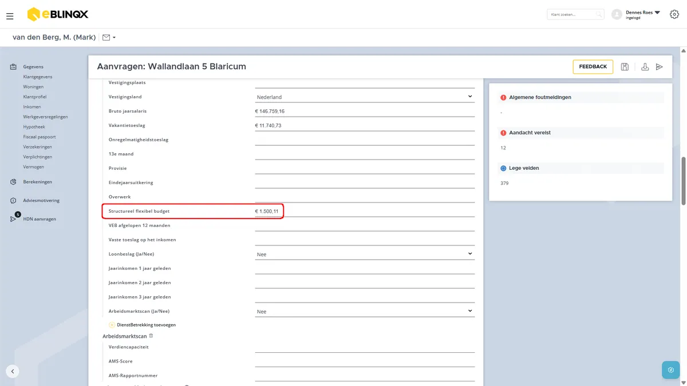
🎯 IT-22654 – Nieuw veld ‘Structureel flexibel budget’ toegevoegd
Met deze update is binnen eBlinqx Hypotheekadvies het veld ‘Structureel flexibel budget’ toegevoegd en gemapt naar het juiste veld in het HDN-formulier. Dankzij deze uitbreiding kan het structureel flexibel budget nu structureel en uniform worden vastgelegd én automatisch worden meegestuurd via HDN, zodat dit ook correct wordt meegenomen in de toetsing en beoordeling door de geldverstrekker.
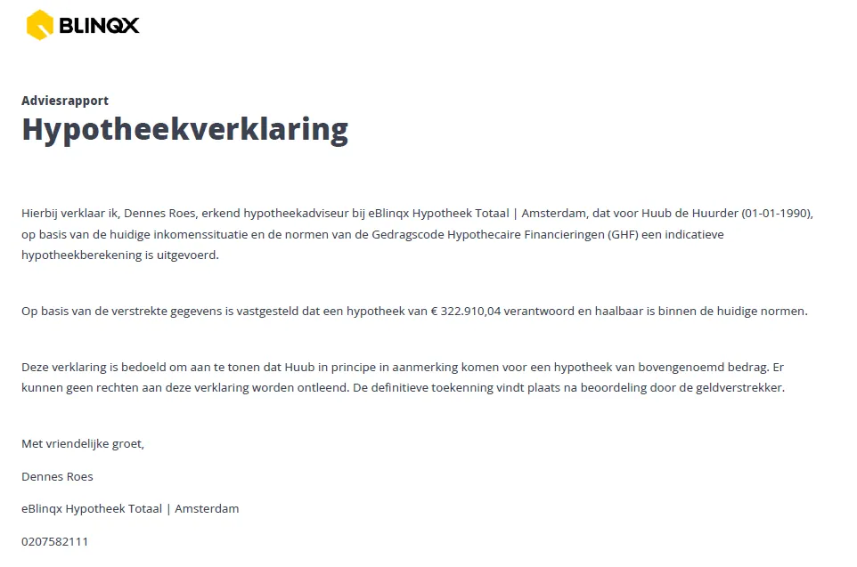
📄 IT-27988 – Nieuwe Hypotheekverklaring beschikbaar!
Er is een nieuw hoofdstuk toegevoegd aan de Tekstenbibliotheek: ‘Hypotheekverklaring’. Hiermee kun je voortaan eenvoudig een heldere en professionele verklaring opnemen in je adviesrapport – of deze als los document downloaden op berekeningsniveau.
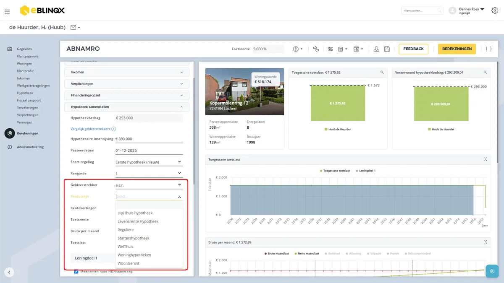
🔧 IT-28036 – Handmatig wisselen van aanbieder werkt weer soepel!
Vanaf nu kun je weer zonder problemen handmatig van aanbieder wisselen binnen zowel hypotheken als verzekeringen. Waar je eerder nog een blanco regel zag verschijnen en de functie Kijken & Vergelijken tijdelijk niet meer werkte, is dat nu helemaal opgelost. Wat is er verbeterd:
-
De gekozen aanbieder wordt direct goed weergegeven.
-
De vervelende blanco regel na het wisselen is verdwenen.
-
Kijken & Vergelijken blijft gewoon actief na het wijzigen van de aanbieder.
💬 IT-28017: Tekstuele aanpassing bij melding ‘Wegnavigeren zonder opslaan’
De melding die verschijnt wanneer je een pagina wilt verlaten zonder je berekening op te slaan, is aangepast voor meer duidelijkheid en gebruiksgemak. De tekst in het pop-upvenster is herschreven zodat direct helder is wat er gebeurt:het gaat niet om het verlaten van de pagina, maar om het opslaan van wijzigingen in je berekening. De nieuwe tekst sluit beter aan bij de werkwijze binnen eBlinqx Hypotheekadvies en voorkomt verwarring over het doel van de melding.
✅ Voordelen
-
Duidelijker onderscheid tussen opslaan en wegklikken
-
Consistente taal in lijn met de rest van eBlinqx Hypotheekadvies
-
Minder kans op dataverlies door per ongeluk weg te navigeren
Een kleine tekstwijziging met groot effect op duidelijkheid en gebruikscomfort.
🎯 IT-28052: Titel bij download acceptatienormen aangepast
We hebben de titel van het downloadbare document Toetsmomenten op rekendatum verduidelijkt. Tot nu toe werd dit document standaard gedownload onder de titel “Volledig maandlastenoverzicht”, wat niet overeenkwam met de inhoud. Vanaf nu wordt de titel automatisch afgestemd op het type norm en de rekendatum die in de berekening van toepassing zijn. De bestandsnaam bij download wordt voortaan dynamisch opgebouwd: Indien Acceptatienormen van toepassing zijn → “Acceptatienormen per 24 september 2025”. Indien Beheernormen van toepassing zijn (zoals bij Ontslag uit hoofdelijke aansprakelijkheid) → “Beheernormen per 24 september 2025”
✅ Voordelen
-
Duidelijk onderscheid tussen acceptatie- en beheernormen
-
Rekendatum altijd zichtbaar in de titel
-
Geen verwarring meer met het Volledig maandlastenoverzicht
Een kleine wijziging die zorgt voor meer helderheid in je documentdownloads.
🔹 IT-27271: Uitbreiding pagina ‘Overbruggingskrediet’ in Adviesrapport
De pagina Overbruggingskrediet in het adviesrapport is uitgebreid met een nieuwe berekeningsspecificatie. Daarmee krijgt de consument voortaan helder inzicht in hoe het overbruggingsbedrag tot stand komt. Deze uitbreiding zorgt voor meer transparantie, duidelijkheid en consistentie in het adviesrapport. Zowel adviseur als klant kunnen nu exact zien waar het berekende overbruggingskrediet op is gebaseerd.